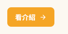
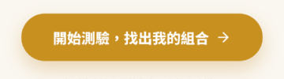
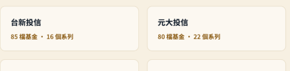
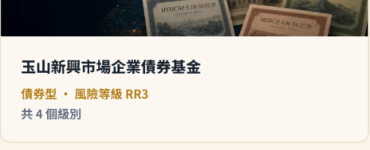
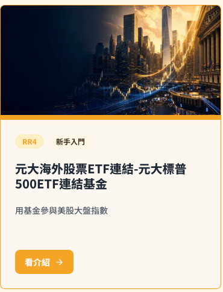
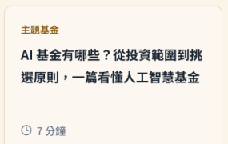

設計系統文件
此靜態參考文件由 design-system/ Markdown 與 tokens/ CSS 自訂屬性自動產生。
Reference Tokens
| Token | 值 | 解析值 |
|---|---|---|
--md-ref-color-warm-100 |
#ffffff |
#ffffff |
--md-ref-color-warm-98 |
#fef7e8 |
#fef7e8 |
--md-ref-color-warm-97 |
#fcf8f1 |
#fcf8f1 |
--md-ref-color-warm-96 |
#faf7f1 |
#faf7f1 |
--md-ref-color-warm-95 |
#f7f0e2 |
#f7f0e2 |
--md-ref-color-warm-90 |
#e7dcc6 |
#e7dcc6 |
--md-ref-color-gold-98 |
#fef1cf |
#fef1cf |
--md-ref-color-gold-95 |
#fdefc4 |
#fdefc4 |
--md-ref-color-gold-90 |
#f7e5be |
#f7e5be |
--md-ref-color-gold-65 |
#f5a525 |
#f5a525 |
--md-ref-color-gold-55 |
#c8901f |
#c8901f |
--md-ref-color-gold-35 |
#8a5a0f |
#8a5a0f |
--md-ref-color-gold-15 |
#3d2a0f |
#3d2a0f |
--md-ref-color-slate-75 |
#b8c2c8 |
#b8c2c8 |
--md-ref-color-slate-45 |
#5b6b7e |
#5b6b7e |
--md-ref-color-slate-42 |
#536475 |
#536475 |
--md-ref-color-slate-35 |
#4b5563 |
#4b5563 |
--md-ref-color-slate-15 |
#1f2936 |
#1f2936 |
--md-ref-color-slate-12 |
#182330 |
#182330 |
--md-ref-color-navy-16 |
#102b42 |
#102b42 |
--md-ref-color-navy-12 |
#13243a |
#13243a |
--md-ref-color-blue-95 |
#e6f0fb |
#e6f0fb |
--md-ref-color-blue-90 |
#d8e9f8 |
#d8e9f8 |
--md-ref-color-blue-40 |
#1c64ae |
#1c64ae |
--md-ref-color-green-95 |
#e1f8f3 |
#e1f8f3 |
--md-ref-color-green-85 |
#bbede0 |
#bbede0 |
--md-ref-color-green-40 |
#007a64 |
#007a64 |
--md-ref-typeface-noto-sans-tc |
"Noto Sans TC", "Noto Sans CJK TC", sans-serif |
"Noto Sans TC", "Noto Sans CJK TC", sans-serif |
--md-ref-weight-400 |
400 |
400 |
--md-ref-weight-500 |
500 |
500 |
--md-ref-weight-700 |
700 |
700 |
--md-ref-weight-900 |
900 |
900 |
--md-ref-size-12 |
12px |
12px |
--md-ref-size-14 |
14px |
14px |
--md-ref-size-16 |
16px |
16px |
--md-ref-size-18 |
18px |
18px |
--md-ref-size-20 |
20px |
20px |
--md-ref-size-28 |
28px |
28px |
--md-ref-size-36 |
36px |
36px |
--md-ref-size-48 |
48px |
48px |
--md-ref-size-8 |
8px |
8px |
--md-ref-size-22 |
22px |
22px |
--md-ref-size-60 |
60px |
60px |
--md-ref-size-1140 |
1140px |
1140px |
--md-ref-size-1440 |
1440px |
1440px |
--md-ref-radius-8 |
8px |
8px |
--md-ref-radius-12 |
12px |
12px |
--md-ref-radius-999 |
999px |
999px |
System Tokens
| Token | 值 | 解析值 |
|---|---|---|
--md-sys-color-background |
var(--md-ref-color-warm-96) |
#faf7f1 |
--md-sys-color-on-background |
var(--md-ref-color-slate-12) |
#182330 |
--md-sys-color-surface |
var(--md-ref-color-warm-97) |
#fcf8f1 |
--md-sys-color-on-surface |
var(--md-ref-color-slate-15) |
#1f2936 |
--md-sys-color-surface-band |
var(--md-ref-color-warm-95) |
#f7f0e2 |
--md-sys-color-on-surface-band |
var(--md-ref-color-slate-12) |
#182330 |
--md-sys-color-surface-bright |
var(--md-ref-color-warm-100) |
#ffffff |
--md-sys-color-on-surface-bright |
var(--md-ref-color-slate-75) |
#b8c2c8 |
--md-sys-color-outline |
var(--md-ref-color-warm-90) |
#e7dcc6 |
--md-sys-color-text-secondary |
var(--md-ref-color-slate-35) |
#4b5563 |
--md-sys-color-text-tertiary |
var(--md-ref-color-slate-45) |
#5b6b7e |
--md-sys-color-text-link |
var(--md-ref-color-gold-35) |
#8a5a0f |
--md-sys-color-primary |
var(--md-ref-color-gold-55) |
#c8901f |
--md-sys-color-on-primary |
var(--md-ref-color-warm-100) |
#ffffff |
--md-sys-color-secondary |
var(--md-ref-color-gold-65) |
#f5a525 |
--md-sys-color-on-secondary |
var(--md-ref-color-warm-100) |
#ffffff |
--md-sys-color-accent-container |
var(--md-ref-color-gold-95) |
#fdefc4 |
--md-sys-color-on-accent-container |
var(--md-ref-color-gold-35) |
#8a5a0f |
--md-sys-color-inverse |
var(--md-ref-color-navy-16) |
#102b42 |
--md-sys-color-on-inverse |
var(--md-ref-color-warm-100) |
#ffffff |
--md-sys-color-category-growth-background |
var(--md-ref-color-blue-95) |
#e6f0fb |
--md-sys-color-on-category-growth-background |
var(--md-ref-color-slate-12) |
#182330 |
--md-sys-color-category-growth-action |
var(--md-ref-color-blue-40) |
#1c64ae |
--md-sys-color-on-category-growth-action |
var(--md-ref-color-warm-100) |
#ffffff |
--md-sys-color-category-steady-background |
var(--md-ref-color-green-95) |
#e1f8f3 |
--md-sys-color-on-category-steady-background |
var(--md-ref-color-slate-12) |
#182330 |
--md-sys-color-category-steady-action |
var(--md-ref-color-green-40) |
#007a64 |
--md-sys-color-on-category-steady-action |
var(--md-ref-color-warm-100) |
#ffffff |
--md-sys-typeface-brand |
var(--md-ref-typeface-noto-sans-tc) |
"Noto Sans TC", "Noto Sans CJK TC", sans-serif |
--md-sys-typescale-display-size |
var(--md-ref-size-48) |
48px |
--md-sys-typescale-headline-size |
var(--md-ref-size-36) |
36px |
--md-sys-typescale-title-large-size |
var(--md-ref-size-28) |
28px |
--md-sys-typescale-title-medium-size |
var(--md-ref-size-20) |
20px |
--md-sys-typescale-title-small-size |
var(--md-ref-size-18) |
18px |
--md-sys-typescale-body-size |
var(--md-ref-size-16) |
16px |
--md-sys-typescale-label-size |
var(--md-ref-size-14) |
14px |
--md-sys-typescale-metadata-size |
var(--md-ref-size-12) |
12px |
--md-sys-typescale-strong-weight |
var(--md-ref-weight-700) |
700 |
--md-sys-typescale-heavy-weight |
var(--md-ref-weight-900) |
900 |
--md-sys-typescale-regular-weight |
var(--md-ref-weight-400) |
400 |
--md-sys-layout-viewport-desktop |
var(--md-ref-size-1440) |
1440px |
--md-sys-layout-content-width |
var(--md-ref-size-1140) |
1140px |
--md-sys-spacing-gap-sm |
var(--md-ref-size-8) |
8px |
--md-sys-spacing-gap-md |
var(--md-ref-size-16) |
16px |
--md-sys-spacing-gap-grid |
var(--md-ref-size-22) |
22px |
--md-sys-spacing-region-header-height |
var(--md-ref-size-60) |
60px |
--md-sys-shape-corner-sm |
var(--md-ref-radius-8) |
8px |
--md-sys-shape-corner-md |
var(--md-ref-radius-12) |
12px |
--md-sys-shape-corner-full |
var(--md-ref-radius-999) |
999px |
Component Tokens
| Token | 值 | 解析值 |
|---|---|---|
--md-comp-site-header-container-color |
var(--md-sys-color-surface) |
#fcf8f1 |
--md-comp-site-header-bottom-border-color |
var(--md-sys-color-outline) |
#e7dcc6 |
--md-comp-site-header-height |
var(--md-sys-spacing-region-header-height) |
60px |
--md-comp-site-header-nav-text-color |
var(--md-sys-color-on-background) |
#182330 |
--md-comp-site-header-nav-text-size |
var(--md-sys-typescale-label-size) |
14px |
--md-comp-site-header-search-container-color |
var(--md-sys-color-surface-bright) |
#ffffff |
--md-comp-site-header-search-placeholder-color |
var(--md-sys-color-on-surface-bright) |
#b8c2c8 |
--md-comp-site-header-search-corner |
var(--md-sys-shape-corner-full) |
999px |
--md-comp-fund-company-card-container-color |
var(--md-sys-color-surface-bright) |
#ffffff |
--md-comp-fund-company-card-corner |
var(--md-sys-shape-corner-md) |
12px |
--md-comp-fund-company-card-name-text-color |
var(--md-sys-color-on-background) |
#182330 |
--md-comp-fund-company-card-name-text-size |
var(--md-sys-typescale-title-small-size) |
18px |
--md-comp-fund-company-card-legal-name-text-color |
var(--md-sys-color-text-tertiary) |
#5b6b7e |
--md-comp-fund-company-card-legal-name-text-size |
var(--md-sys-typescale-label-size) |
14px |
--md-comp-fund-company-card-stats-text-color |
var(--md-sys-color-text-link) |
#8a5a0f |
--md-comp-fund-company-card-stats-text-size |
var(--md-sys-typescale-label-size) |
14px |
--md-comp-fund-company-card-grid-gap |
var(--md-sys-spacing-gap-grid) |
22px |
Design System Extraction Kickstart
Extract a reusable design-system specification from the provided references.
Do not implement product screens yet. Do not scaffold app routes yet. Do not invent a landing page.
References
List screenshots, graphic/brand/editorial references, Figma URLs/nodes, rendered routes, native app captures, project folders, and prototype sources here.
For AI-generated or vibe-coded project folders, include route/state coverage, rendered capture attempts, screenshot paths, Storybook stories, and keep/ignore notes before using source code as high-confidence evidence.
For native iOS or Android project folders, include platform/framework coverage, native screen/state coverage, simulator/emulator/device or preview capture attempts, screenshot paths, design-system modules, token/resource files, component usage checks, and keep/ignore notes before using source code as high-confidence evidence.
Required Order
- Fill
DESIGN_EVIDENCE_MAP.md, record source fingerprints, and review duplicate source candidates. - For vibe-coded projects, complete the route/state manifest, run rendered UI capture when possible, and classify demo-only, unused, dead-code, capture-blocked, auth-blocked, contradictory, or out-of-scope sources before raising confidence.
- For native app projects, complete the native screen/state manifest, run native capture/preview/screenshot-test capture when possible, and classify native-source-only, native-capture-blocked, native-contradictory, or out-of-scope sources before raising confidence.
- Fill
DESIGN_PRINCIPLES.md. - Fill
DESIGN_ELEMENTS.md. - Fill
TOKEN_ARCHITECTURE.md, review near token candidates, then filltokens/. - Fill
COMPONENT_INVENTORY.md, including reusable typographic/text-lockup candidates, and review similar component candidates. - Extract at least one primary component token spec into
design-system/components/. For graphic/editorial-heavy references, this may be a high-value typographic lockup instead of an interactive UI control. - Fill
PAGE_COMPOSITION_RULES.md,INTERACTION_STATES.md, andANTI_AI_STYLE_RULES.md. - Generate
docs/design-system/index.htmlanddocs/design-system/review.html. - Run strict source, token, and component audits.
- For collaborative branch or PR work, update
INTEGRATION_REVIEW.md. - Update
SESSION_STATE.md. - Stop and ask the user what to do next.
Boundary
This package defines design-system rules and tokens. Product implementation begins only after the user approves the checkpoint.
Design System Session State
Update this file at every checkpoint.
Current Stage
- Stage: Checkpoint — baseline extraction complete（現況基準線萃取完成，等待開發者決定）
- Last updated: 2026-10-20
- AI tool / model: Claude Code (cloud session)
- Report Language: zh-Hant (繁體中文)
Completed Outputs
- [x] DESIGN_EVIDENCE_MAP.md
- [x] INTEGRATION_REVIEW.md（本輪不適用）
- [x] DESIGN_PRINCIPLES.md
- [x] DESIGN_ELEMENTS.md
- [x] TOKEN_ARCHITECTURE.md
- [x] COMPONENT_INVENTORY.md
- [x] design-system/components/*.md component token specs
- [x] INTERACTION_STATES.md
- [x] PAGE_COMPOSITION_RULES.md
- [x] ANTI_AI_STYLE_RULES.md
- [x] tokens/tokens-ref.css
- [x] tokens/tokens-sys.css
- [x] tokens/tokens-comp.css
- [ ] docs/design-system/index.html
- [ ] docs/design-system/review.html
Key Design Decisions
| Decision | Evidence | Files updated |
|---|---|---|
| 範圍：Figma 首頁、公司總覽、新手入門、追求成長、穩健配息（共 5 頁）；其餘 4 頁與 App 截圖、logo／IP 圖列為 planned | S1–S5、S7–S9 | DESIGN_EVIDENCE_MAP.md |
Figma 檔無 Variables、頁面為整張點陣圖 → 全部 token 標 measured，品牌定調前視為「現況基準線」 | get_variable_defs 回傳空；get_design_context 僅回傳單張圖片 | TOKEN_ARCHITECTURE.md、tokens/*.css |
近似色／近似字級一律暫定 keep distinct，不在品牌定調前合併 | 使用者同意（先萃取、後定配色） | TOKEN_ARCHITECTURE.md |
| 抽出 2 個元件規格（site-header、fund-company-card）；button／fund-card 等因相似度待決，不建 spec | Similarity Review | COMPONENT_INVENTORY.md、components/*.md |
Token Layers Changed
- Reference: 新增 warm／gold／slate／navy／blue／green 色階、字級、間距、圓角（全為 measured）
- System: 新增 background／surface／primary／secondary／category 等語意色與 typescale、layout、shape
- Component: site-header、fund-company-card 共 17 個 token
Source Duplicate Review
- Duplicate source candidates found: 2（分類頁模板重複）
- Developer decisions recorded in
DESIGN_EVIDENCE_MAP.md: 2 筆，皆為暫定 keep distinct，待開發者確認 - Source fingerprints recorded: 9 筆（5 筆含 sha256）
Vibe Project Intake
- Applies: 否（來源為 Figma 點陣圖，非程式專案）
- Route/state manifest:
- Rendered UI capture pass:
- App / Storybook command:
- Local URL:
- Rendered routes or stories covered:
- Screenshots captured or supplied:
- Capture assets path:
- Capture blockers:
- DOM/CSS inspection result:
- Keep/ignore decisions recorded in
DESIGN_EVIDENCE_MAP.md: - Demo-only / unused / dead-code / capture-blocked / auth-blocked / contradictory sources found:
- Confidence impact:
Native App Intake
- Applies:
- Platforms/frameworks:
- App targets/modules inspected:
- Native design-system modules found:
- Native screen/state manifest:
- Native UI Capture Pass:
- Capture commands:
- Devices / OS/API levels covered:
- Screens, previews, screenshot tests, or supplied captures covered:
- Capture assets path:
- Capture blockers:
- Native token/resource files inspected:
- Native component usage verification:
- Keep/ignore decisions recorded in
DESIGN_EVIDENCE_MAP.md: - Native source-only / capture-blocked / contradictory sources found:
- Confidence impact:
Token Review
- Near token candidates found: 8 筆（audit 標出）＋4 組額外觀察
- Developer decisions recorded in
TOKEN_ARCHITECTURE.md: 8 筆暫定 keep distinct，全部待開發者確認
Component Similarity Review
- Similar component candidates found: 4
- Developer decisions recorded in
COMPONENT_INVENTORY.md: 4 筆皆為 blocked（待開發者決定） - Visual comparison assets:
assets/component-review/（8 張來源截圖裁切）
Collaboration Review
- Active branches / PRs:
- Integrator / reviewer:
- Integration decisions recorded in
INTEGRATION_REVIEW.md: - Blocked items:
- Final integration result:
Open Questions
- 主按鈕色：首頁金色 #C8901F 與新手入門頁琥珀 #F5A525，要保留哪一個（或兩者語意區分）？
- 近似色（#FCF8F1／#FAF7F1、#1F2936／#182330 及三組灰藍）是否合併？建議在品牌配色定案後一併決定。
- 卡片頭圖的暗色科幻風格是否要保留？IP 中的紅色福神造型是否淘汰？
- 未分析來源：多元配置、海外佈局、基金學堂、學堂內頁、App 截圖（6 張）、logo 與 IP 原圖（見 S7–S9）。
- 字體：Figma 為點陣圖，無法確認實際字體與字級，需設計師提供。
- 分類頁大量卡片頭圖為空白佔位：是未完成稿還是載入狀態？
Verification
- Source audit mode: strict
- Source audit result: (see below)
- Token audit mode: strict
- Token audit result: (see below)
- Component audit mode: strict
- Component audit result: (see below)
Generated Documentation
- HTML docs: docs/design-system/index.html
- HTML docs UI locale: zh-Hant
- Review queue: docs/design-system/review.html
Recommended Next Prompt
「品牌配色已定案為 …；請依此建立 Figma Variables，並用 design-system-extractor 跑 Late-Arriving Authoritative Source Pass 校準 fund-abao/tokens，並回覆 Token Recalibration 表。」
Integration Review
Use this file when multiple contributors extract sources, tokens, or components on separate branches or PRs for the same design-system package.
Integration Round
- Target branch:
- Integration branch:
- Integrator / reviewer:
- Started:
- Completed:
- Result:
not started
Branch / PR Queue
| Branch / PR | Owner | Scope | Files touched | Evidence status | Token status | Component status | Docs status | Audit status | Reviewer decision | Follow-up |
|---|
Reviewer decision values: merge, request changes, blocked, superseded, defer.
Cross-Branch Decisions
Use this table when two branches overlap in source evidence, token candidates, component identity, naming, or generated outputs.
| Date | Branches / PRs | Overlap | Decision (merge / make variant / keep distinct / reuse existing source / ignore duplicate / blocked) | Rationale | Files updated | Confirmed by |
|---|
Merge Log
| Date | Branch / PR | Commit / SHA | Reviewer | Decision | Audits run | Notes |
|---|
Blocked Items
| Item | Blocking question | Needed decision | Owner | Target date |
|---|
Final Integration Checklist
- [ ] Every branch or PR has a queue row and reviewer decision.
- [ ] Duplicate source decisions are recorded in
DESIGN_EVIDENCE_MAP.md. - [ ] Near-token decisions are recorded in
TOKEN_ARCHITECTURE.md. - [ ] Similar component decisions are recorded in
COMPONENT_INVENTORY.md. - [ ] Component specs changed in this integration have component fingerprints.
- [ ] Token inheritance remains
ref -> sys -> comp. - [ ] Generated HTML docs were regenerated after source conflicts were resolved.
- [ ] Strict source, token, and component audits passed or blockers are recorded.
Design Evidence Map
Use this file to trace design decisions back to source evidence.
Source Inventory
Evidence tier ranks the source's authority: 1 production Figma/component library, 2 production screenshots, 3 native simulator/emulator/device captures, 4 rendered project UI, 5 native preview/screenshot-test captures, 6 prototype code, 7 descriptive prompt. When a new source's tier outranks the tiers behind existing decisions, run the Late-Arriving Authoritative Source Pass instead of treating it as supplementary evidence.
| Source ID | Type | Evidence tier | Path / URL / Node | Source fingerprint | Screen or state | Notes | Confidence |
|---|---|---|---|---|---|---|---|
| S1 | Figma page raster（Figma 頁面點陣圖） | 2 | https://www.figma.com/design/T4Ddywb8e4bzFQDXEzU57z/ node 2:4 首頁 1 | figma:T4Ddywb8e4bzFQDXEzU57z#2:4 · sha256:883e0e89320f3a790ffb561d17ae10528fbba8ad08a277ad756f71d641b0265e | 首頁 desktop 1440×3268 | assets/rendered-captures/home-desktop-1440.png；頁面為整張點陣圖，無圖層／Variables | High（視覺）／Medium（量測） |
| S2 | Figma page raster | 2 | node 3:3 基金公司 1 | figma:T4Ddywb8e4bzFQDXEzU57z#3:3 · sha256:78d051aec867bd2476fb3bca607e0fba1a8ebed7d3e1de78bb557043d9b33aba | 基金公司總覽 1440×1850 | fund-companies-desktop-1440.png | High／Medium |
| S3 | Figma page raster | 2 | node 3:7 新手入門 1 | figma:T4Ddywb8e4bzFQDXEzU57z#3:7 · sha256:38b36c813bb4edd3f90057bb9282801720d9d6e6e6a93d127900c1d1a4cc338d | 新手入門分類頁 1440×1557 | beginner-desktop-1440.png | High／Medium |
| S4 | Figma page raster | 2 | node 3:12 追求成長 2 | figma:T4Ddywb8e4bzFQDXEzU57z#3:12 · sha256:9c1dd695ab32144e4d70e04d6a12f91540eae95e6a331340d5f6ec051d7085da | 追求成長分類頁（縮圖 422×2400，原 1440×8192） | growth-category-overview-422w.png；低解析，僅用於色票與版型；多數卡片圖片為空白佔位 | Medium |
| S5 | Figma page raster | 2 | node 3:9 穩健配息 1 | figma:T4Ddywb8e4bzFQDXEzU57z#3:9 · sha256:8b07961d09449a29246363b83bf14a303dc23c6584f094b619b359b1f1cf1e54 | 穩健配息分類頁（縮圖） | steady-dividend-overview-422w.png | Medium |
| S6 | Figma brand brief（描述性需求文件） | 7 | node 3:23 品牌視覺設計需求 | figma:T4Ddywb8e4bzFQDXEzU57z#3:23 | 需求文字＋品牌個性表 | 非視覺證據；用於品牌個性與交付項目 | High（內容）／不可作 token 來源 |
| S7 | Figma app screenshots（App 截圖） | 2 | nodes 3:13–3:18 IMG_1184–1189（390×844） | figma:T4Ddywb8e4bzFQDXEzU57z#page:abo-app-screens | 6 張 iOS 截圖 | 尚未逐張分析（本輪範圍排除），僅檢視縮圖 | Low |
| S8 | Figma logo / IP raster（Logo 與 IP 圖） | 2 | nodes 3:19 logo、3:26、3:27 IP 圖 | figma:T4Ddywb8e4bzFQDXEzU57z#page:abo-brand-assets | logo 127×130；IP 角色截圖 | 尚未分析；僅從首頁輪播看到 6 種角色造型 | Low |
| S9 | Figma page raster | 2 | nodes 3:6 多元配置、3:8 海外佈局、3:5 基金學堂、3:4 學堂內頁 | figma:T4Ddywb8e4bzFQDXEzU57z#3:6, #3:8, #3:5, #3:4 | 其餘頁面 | 本輪未擷取，列為 planned 來源 | Low |
Source Duplicate Review
Use this table when two screenshots, graphic/brand exports, Figma nodes, routes, or other exports are exact duplicates or visually/functionally very close. Record the decision before counting both as separate evidence.
| Candidate source | Duplicate of | Match type | Fingerprint / normalized key | Suggested action | Developer decision | Rationale |
|---|---|---|---|---|---|---|
S4 追求成長 3:12 | S5 穩健配息 3:9（及 3:6、3:8 同模板頁） | 版型高度相似（同一分類頁模板，僅色調與內容不同） | figma:T4Ddywb8e4bzFQDXEzU57z#3:12 ↔ figma:T4Ddywb8e4bzFQDXEzU57z#3:9 | keep distinct for color evidence / reuse existing source for layout evidence | keep distinct（暫定，provisional；待開發者確認） | 色票證據各自獨立（藍 vs 綠）；版型證據只計一次，避免重複基金卡片灌水信心 |
S3 新手入門 3:7 | S4 追求成長 3:12 | 分類頁頭部與卡片結構相似，但配色不同（琥珀 vs 藍） | figma:T4Ddywb8e4bzFQDXEzU57z#3:7 ↔ figma:T4Ddywb8e4bzFQDXEzU57z#3:12 | keep distinct | keep distinct（暫定，provisional；待開發者確認） | 兩頁 CTA 與色條顏色不同，是本輪發現的重要不一致，需保留為獨立證據 |
Vibe Project Scope Review（本輪不適用：來源為 Figma 點陣圖，非程式專案）
Use this table when the input is an AI-generated or vibe-coded project. Record whether project evidence is rendered, screenshot, storybook, token-used, component-used, demo-only, unused, dead-code, capture-blocked, auth-blocked, contradictory, or out-of-scope before it influences confidence.
| Source | Classification | Visible in rendered UI | Token/component used | Keep / ignore decision | Rationale |
|---|
Native App Project Review
Use this table when the input is a native iOS or Android app project. Record whether native evidence is native-capture, native-preview, screenshot-test, native-token-used, native-component-used, native-source-only, native-capture-blocked, native-contradictory, out-of-scope, or explicitly kept/ignored before it influences confidence.
| Source | Classification | Visible in native capture / screenshot / preview | Token / component / resource used | Keep / ignore decision | Rationale |
|---|
Route / State Manifest
Use this table when extracting from a project folder with runnable routes or Storybook stories.
| Route or story | Viewport | State | Render command | Screenshot path | Source files | Capture status | Keep / ignore | Notes |
|---|
Native Screen / State Manifest
Use this table when extracting from native iOS or Android screens, previews, screenshot tests, simulators, emulators, or supplied app captures.
| Platform | Screen or component | Source entrypoint | Device / viewport | State | Render/capture command | Screenshot path | Source files | Capture status | Keep / ignore | Notes |
|---|
Rendered UI Capture Attempts
Record every browser capture attempt for runnable projects, including blocked captures.
| Capture ID | Route or story | Viewport | State | URL | Screenshot path | DOM/CSS inspected | Source files linked | Status | Confidence impact |
|---|
Native UI Capture Attempts
Record every native capture attempt for simulator, emulator, device, preview, screenshot-test, or demo/gallery output, including blocked captures.
| Capture ID | Platform | Screen/component | Device | OS/API | Orientation | State | Command | Screenshot path | Source files linked | Status | Confidence impact |
|---|
Evidence
| Evidence ID | Source ID | Region | Observed pattern | Design decision | Affected output | Confidence |
|---|---|---|---|---|---|---|
| E1 | S1,S2,S3 | 頁面底色、卡片、導覽列 | 暖米色系：區塊帶 #F7F0E2、卡片／導覽 #FCF8F1、hero #FAF7F1；新手入門頁底 #FEF7E8；邊線 #E7DCC6；白色僅用於搜尋框與 chip | 以暖米色為品牌基底，白色作為「輸入／高亮」層 | tokens-ref warm-*；sys background/surface/surface-band/outline | Medium（#FCF8F1 與 #FAF7F1 ΔE 0.74，可能是同一色） |
| E2 | S1,S2,S3 | logo 圖示、首頁主 CTA「開始測驗」、頁尾標題 | 金色 #C8901F（logo 圖示底、CTA 底、頁尾欄標題） | 金色 #C8901F 為品牌主色 | ref gold-55；sys primary | High（重複量測） |
| E3 | S3 | 新手入門頁「看介紹」按鈕、badge、卡片頂部色條 | 琥珀色 #F5A525，與首頁 CTA 金色 #C8901F 不同 | 同為主要動作卻用兩種橘金；列為不一致，待品牌決定 | ref gold-65；sys secondary | High（觀察）／決策待定 |
| E4 | S1,S2 | 標題、卡片標題、次要文字 | 標題 #182330、卡片標題 #1F2936、深色按鈕 #102B42、頁尾品牌字 #13243A；次要文字 #5B6B7E／#536475／#4B5563 | 現況用了多組相近深藍／灰藍；建議收斂 | ref slate-*、navy-*；sys on-background/on-surface/text-secondary/text-tertiary | Medium（文字色由抗鋸齒像素取最頻色，可能有 ±2 誤差） |
| E5 | S4,S5 | 分類頁頂部漸層、頁底色、按鈕 | 追求成長：底 #E6F0FB、頂 #D8E9F8、按鈕 #1C64AE；穩健配息：底 #E1F8F3、頂 #BBEDDF、按鈕 #007A64 | 每個分類有專屬色調（底色＋動作色）；多元配置、海外佈局未取樣 | ref blue-*、green-*；sys category-growth-*、category-steady-* | Medium（縮圖取樣）；新手入門為琥珀 |
| E6 | S1,S2,S3 | 標題／內文字級 | 字高：hero H1 47px、首頁 H1 35px、首頁區塊標題 27px、卡片標題 17–19px、卡片 meta 14px | 字級階層約 48／36／28／20／18／14（估算，±2px）；字體為思源黑體系（Noto Sans TC）視覺判斷 | ref size-*、typeface；sys typescale-* | Low（由字高估算，非設計稿數值） |
| E7 | S1,S2,S3 | 版面容器 | 1440 畫布；內容左右各 150px → 內容寬 1140；三欄卡片寬約 365、欄距 22；導覽列高 60；搜尋框 256×40、全圓角 | 內容寬 1140、三欄格線、導覽列 60 | ref size-1140/1440/22/60；sys layout-*、spacing-* | Medium |
| E8 | S1,S2,S3 | 卡片圓角 | 卡片圓角視覺約 12px、按鈕約 8px、搜尋框／chip 全圓角 | radius 8／12／full | ref radius-*；sys shape-corner-* | Low（目測） |
| E9 | S1,S2,S3,S4 | 基金／公司卡片圖片 | 深藍黑底＋金色光的 AI 風格財經插圖（城市、金庫、地球、山）；首頁精選基金為冷藍色調；新手入門頁出現青藍色圖 | 圖像風格偏「暗色科幻」，與「親切、不冷冰冰」品牌個性有落差；同站色調不一致 | DESIGN_ELEMENTS Imagery；ANTI_AI_STYLE_RULES | High（觀察） |
| E10 | S1 | 首頁快問快答輪播 | 6 種 3D 公仔 IP 造型（綠衣、深色上衣、紅色福神、藍帽、藍背景男生…），白色圓角框、彩色背景各異 | IP 風格大致統一為 3D 卡通，但配色與主題（福神）不一致 | COMPONENT_INVENTORY ip-avatar-carousel | Medium |
| E11 | S1,S2 | 公司卡片（圖＋名稱＋法人名＋統計） | 圖上方、名稱粗體深藍、法人全名灰藍、統計金色文字；白底卡片；3 欄 | 公司卡片規格 | components/fund-company-card.md | High |
| E12 | S1,S2,S3 | 導覽列 | logo 左、8 個導覽項居中（窄欄位造成 2 字換行，如「首/頁」「新手入/門」）、搜尋框右；底部邊線 #E7DCC6 | 導覽列規格；導覽項換行是瑕疵 | components/site-header.md | High |
| E13 | S6 | 品牌個性表 | 親切好懂／專業可靠／中立透明／有點聰明的小驚喜；不要輕浮、冷冰冰、推銷感、賭博感 | 作為 principles 的依據；與暗色科幻圖像、福神 IP 有衝突 | DESIGN_PRINCIPLES | High（內容） |
Design Principles
Write exactly 5-7 principles extracted from the references.
Each principle must include:
- observed evidence
- implementation rule
- do / don't guidance
| # | Principle | Evidence | Implementation rule | Do | Don't |
|---|---|---|---|---|---|
| 1 | 暖米色為底，金色為記號 | E1,E2 | 頁面底用 warm 系（background/surface/surface-band），主色 primary（金）只用於 logo、主 CTA、標題強調、數字／連結 | 用金色標出「重點」：CTA、統計數字、欄標題 | 不要大面積鋪金色；不要在同一畫面混用 #C8901F 與 #F5A525 兩種主按鈕色 |
| 2 | 深藍黑文字帶來「第二眼的信任感」 | E4,E13 | 標題與正文用深藍黑（on-background），次要文字用灰藍（text-secondary/tertiary），對應品牌個性「專業、可靠」 | 以字重（700/900）建立層級，而不是多種顏色 | 不要再新增新的灰藍／深藍變體（現況已有 3＋3 種近似色） |
| 3 | 卡片是資訊容器：圖在上、文字在下、一個動作 | E9,E11 | 基金／公司／文章皆為「縮圖＋粗體名稱＋輔助資訊＋單一動作」的卡片；三欄格線、欄距 22 | 同類資訊使用同一種卡片結構 | 不要把列表列（row）做成卡片；不要在卡片內再套卡片 |
| 4 | 每個分類有專屬色調，但骨架一致 | E5 | 分類頁共用同一骨架（麵包屑、badge、H1、副標、適合對象面板、卡片格線），只替換 category 色（底、hero、動作色） | 新增分類時只新增一組 category-* token | 不要為單一分類改版型；不要讓新手入門（琥珀）與其他分類的 CTA 邏輯不一致（待決定） |
| 5 | 白話優先的文字層級 | E6,E13 | 大標＋一行白話副標；卡片以 14px 灰藍小字補充（風險等級 RR、系列數）；不使用誇大字眼 | 風險等級（RR）以中性 chip 呈現 | 不要用紅綠暗示報酬；不要使用「爆賺」「穩賺」等賭博感用語 |
| 6 | IP 角色負責「親近感」，且不得削弱可信度 | E10,E13 | 角色用於快問快答輪播與空狀態等「陪伴」位置，放在白色圓角框內 | 角色表情與姿勢保持友善、聰明的小驚喜 | 不要使用福神／財神類造型（有賭博暗示）；不要讓角色出現在風險說明區 |
| 7 | 圖像風格需與品牌個性對齊（目前待決定） | E9,E13 | 現況以暗色科幻財經插圖作為卡片頭圖；與「親切、不冷冰冰」有落差，列為待決定項目，非規範 | 在品牌定調前，沿用現有圖片但不再新增同風格圖 | 不要把暗色科幻風格寫成品牌圖像規範 |
Design Elements
Color System
| Role | Recommended value | Usage | Evidence / rationale |
|---|---|---|---|
| background | warm-96 #FAF7F1 | 頁面底（首頁 hero） | E1 |
| surface | warm-97 #FCF8F1 | 卡片、導覽列 | E1 |
| surface-band | warm-95 #F7F0E2 | 首頁區塊帶、頁尾 | E1 |
| outline | warm-90 #E7DCC6 | 導覽列／區塊分隔線 | E1 |
| primary | gold-55 #C8901F | logo、主 CTA、頁尾欄標題 | E2 |
| secondary（暫定） | gold-65 #F5A525 | 新手入門頁 CTA 與色條；與 primary 是否合併待決定 | E3 |
| text-link | gold-35 #8A5A0F | 頁尾、金色連結文字 | E3 |
| on-background | slate-12 #182330 | 標題 | E4 |
| text-secondary / tertiary | slate-35 #4B5563 / slate-45 #5B6B7E | 說明文字、副標 | E4 |
| inverse | navy-16 #102B42 | 深色按鈕（閱讀完整指南） | E4 |
| category growth / steady | blue-95 #E6F0FB／blue-40 #1C64AE；green-95 #E1F8F3／green-40 #007A64 | 分類頁背景與動作色；多元配置、海外佈局未取樣 | E5 |
Document palette families with 100 as the lightest step and 0 as the darkest step. Note any close colors that need a merge/keep-distinct decision in TOKEN_ARCHITECTURE.md.
Typography
| Role | Font / weight / size guidance | Usage | Evidence / rationale |
|---|---|---|---|
| display | Noto Sans TC 900 / 48px | 分類頁 H1 | E6（字高 47px，估算） |
| headline | Noto Sans TC 900 / 36px | 首頁主標 | E6（字高 35px，估算） |
| title-large | Noto Sans TC 700 / 28px | 區塊標題（今日精選基金…） | E6 |
| title-medium / small | Noto Sans TC 700 / 20px、18px | 卡片標題（基金卡 20px，公司卡 18px，建議收斂） | E6 |
| body | Noto Sans TC 400 / 16px | 說明文字 | E6（推估） |
| label / metadata | Noto Sans TC 500–700 / 14px、12px | 統計、RR chip、版權說明 | E6 |
字體為視覺判斷（Noto Sans TC 風格），Figma 為點陣圖，無法讀取實際字體名稱，須由設計師確認。
Typographic Composition / Text Lockups
Document recurring text groupings separately from atomic typography. Include slot order, hierarchy, scale relationship, spacing, alignment, max line length, line-break behavior, color pairing, and language/script behavior.
| Pattern | Slots | Composition rule | Evidence / rationale | Component candidate |
|---|---|---|---|---|
| 分類頁頭 | breadcrumb → badge → H1 → 副標 | 左對齊，內容寬 1140 起算於 x=150；右側為「這類基金適合」面板 | E5 | category-hero（planned） |
| 區塊標題 | 標題＋灰藍說明句 | 28px 標題、其下一行說明 | E6 | section-heading（planned） |
| 公司卡片文字 | 名稱／法人全名／統計 | 18px 粗體、14px 灰藍、14px 金色統計（以「・」分隔） | E11 | fund-company-card |
| 精選主題 | 金色小標「本週主題」→ 大標 → 內文 → 深色按鈕 | 左對齊，大標約 28px | E6 | topic-feature（planned） |
Shape And Corners
| Role | Value | Usage | Evidence / rationale |
|---|---|---|---|
| corner-sm | 8px | 按鈕 | E8（目測，Low） |
| corner-md | 12px | 卡片 | E8（目測，Low） |
| corner-full | 999px | 搜尋框、chip、快問快答 pill | E8 |
Spacing And Density
| Role | Value | Usage | Evidence / rationale |
|---|---|---|---|
| layout-viewport | 1440px | 桌面畫布 | E7 |
| content-width | 1140px（左右留白 150px） | 主內容寬 | E7 |
| gap-grid | 22px | 三欄卡片欄距（實測；與 24px 接近，待確認） | E7 |
| header-height | 60px | 導覽列 | E7 |
| gap-sm / gap-md | 8px / 16px | 元素間距（推估，Low） | E7 |
Record close spacing, sizing, type, radius, opacity, or motion values that need developer confirmation before becoming separate reference tokens.
Elevation And Depth
| Role | Value | Usage | Evidence / rationale |
|---|---|---|---|
| 卡片陰影 | 極淡的暖色陰影（僅觀察到，未量測數值，不建立 token） | 卡片、輸入框 | E1,E2（目測）；陰影數值需設計師提供 |
Iconography And Imagery
Document icon style, media style, illustration/photo rules, and accessibility expectations.
圖像觀察（本輪僅記錄，不寫成規範）
- 基金／公司卡片頭圖：深藍黑底＋金色光的 AI 生成財經插圖，風格偏「暗色科幻」；首頁精選基金偏冷藍、新手入門頁出現青藍色（E9）。與品牌個性「親切、不冷冰冰」有落差。
- 空狀態：追求成長、穩健配息頁大量卡片頭圖為空白佔位（S4、S5），屬於未完成稿，不可當作設計規範。
- IP 角色：首頁輪播 6 種 3D 公仔造型（E10），包含紅色福神造型，與「不賭博感」有衝突。
- 圖示：僅觀察到搜尋、箭頭、時鐘等細線條圖示；樣式未量測。
Token Architecture（Token 架構）
> Baseline 狀態：本套 tokens 全為 measured（Figma 檔無 Variables、頁面為點陣圖，以像素取樣量測）。它描述「現況」，不是已核准的品牌規範；品牌配色定案後須走 Late-Arriving Authoritative Source Pass 重新校準。
Document the token layers, prefixes, naming model, and audit rules for this package.
Prefixes
| Layer | Prefix | Responsibility |
|---|---|---|
| Reference | --md-ref-* | Raw values only |
| System | --md-sys-* | Shared semantic roles |
| Component | --md-comp-* | Component and region slots |
Inheritance
component token -> system token -> reference valueReference Color Scale
Use numeric palette steps from light to dark:
100 -> 0100is the lightest visible step in a palette family.0is the darkest visible step in a palette family.- Higher numbers must be visually lighter than lower numbers in the same family.
- Semantic color names belong in
sys, notref.
Layer Rules
| Layer | Allowed | Forbidden |
|---|---|---|
| Reference | raw color steps, sizes, weights, radius, opacity | semantic roles, component names |
| System | shared roles, foreground/background pairs, spacing roles | component anatomy |
| Component | component slots and states | raw values, direct reference values |
Near Token Decisions
Use this table when candidate reference tokens are visually or numerically close. Stop and confirm with the developer before finalizing unresolved rows.
Provenance is authored (Figma Variable/style, design-system export, source-code token — no measurement error) or measured (screenshot sampling, pixel measurement). measured vs measured may merge through normal review; when either side is authored, default to keep distinct and never round the authored value away; authored vs authored always requires an explicit developer decision.
| Candidate A | Provenance A | Candidate B | Provenance B | Difference | Decision (merge / keep distinct) | Rationale | Confirmed by |
|---|---|---|---|---|---|---|---|
--md-ref-color-warm-98 #FEF7E8 | measured | --md-ref-color-warm-95 #F7F0E2 | measured | ΔE 2.46 | keep distinct（保留區分） | 新手入門頁底色 vs 首頁區塊帶色，為不同頁面的不同區域；品牌定調前不合併（provisional） | pending developer（待開發者確認） |
--md-ref-color-warm-97 #FCF8F1 | measured | --md-ref-color-warm-96 #FAF7F1 | measured | ΔE 0.74 | keep distinct（保留區分） | 卡片／導覽列表面 vs 首頁 hero 背景；差異可能只是量測雜訊，建議品牌定調後合併（provisional） | pending developer（待開發者確認） |
--md-ref-color-slate-15 #1F2936 | measured | --md-ref-color-slate-12 #182330 | measured | ΔE 2.96 | keep distinct（保留區分） | 卡片標題 vs 首頁標題文字；近似深藍黑，建議合併為單一標題色（provisional） | pending developer（待開發者確認） |
--md-ref-size-12 12px | measured | --md-ref-size-14 14px | measured | 2px | keep distinct（保留區分） | metadata 與 label 字級，皆為字高估算（±2px），Low confidence | pending developer（待開發者確認） |
--md-ref-size-14 14px | measured | --md-ref-size-16 16px | measured | 2px | keep distinct（保留區分） | label 與 body 字級，字高估算 | pending developer（待開發者確認） |
--md-ref-size-16 16px | measured | --md-ref-size-18 18px | measured | 2px | keep distinct（保留區分） | body 與 title-small（公司卡片名稱 h=17）字級 | pending developer（待開發者確認） |
--md-ref-size-18 18px | measured | --md-ref-size-20 20px | measured | 2px | keep distinct（保留區分） | 公司卡片名稱（h=17）與基金卡片標題（h=19）；建議收斂為單一標題字級 | pending developer（待開發者確認） |
--md-ref-size-20 20px | measured | --md-ref-size-22 22px | measured | 2px | keep distinct（保留區分） | 22 為卡片格線間距（實測 22），20 為字級，不同 token family，不應合併 | pending developer（待開發者確認） |
未被 audit 標出、但觀察到的近似色（供討論）
| 群組 | 觀察到的值 | 備註 |
|---|---|---|
| 次要文字灰藍 | #5B6B7E（新手入門 hero 副標）、#536475（首頁副標）、#4B5563（卡片說明） | 三種灰藍用在同一角色（次要文字），強烈建議合併成一個 |
| 深藍 | #102B42（深色按鈕）、#13243A（頁尾品牌字）、#182330（標題） | 三種近似深藍，建議收斂 |
| 金色 | #C8901F（logo／CTA／頁尾標題）、#F5A525（新手入門頁 CTA 與頂部色條）、#8A5A0F（金色連結文字） | #C8901F 與 #F5A525 是不同色相明度，同為「主要按鈕」卻不一致 → 品牌定調時需決定主 CTA 色 |
| 淡金背景 | #FEF1CF、#FDEFC4、#F7E5BE | 皆為新手入門頁 hero／chip，hero 為 #FEF5E3→#F7E5BE 漸層 |
Accessibility Remap Decisions
Use this table when an authored value fails an accessibility requirement (for example WCAG AA contrast) and the shipped value must differ. Keep the authored value as its own ref token, map the sys role to the accessible value, and add an a11y-remap CSS comment linking the two. Downstream parity tooling reads these rows to classify the difference as required-adaptation instead of drift.
| Decision ID | Authored value (ref token) | Authored contrast | Accessible value (ref token) | Accessible contrast | Affected sys/comp tokens | Rationale | Confirmed by |
|---|
Token Recalibration
Use this table when a higher-tier authoritative source (for example production Figma with Variables) arrives after tokens were finalized from lower-tier evidence. List every affected token, recommend merge (measured collapses into the authored value), keep distinct, or re-authorize (replace the token value with the authored value), and get developer adjudication before applying changes.
| Token | Current value (provenance) | Authoritative value (source) | Delta | Recommendation | Developer decision | Follow-up |
|---|
Native Unit And Source Mapping
Use this table for native iOS/Android projects when source values use platform units or platform token/resource files.
| Canonical token | Native source token/resource | Platform/unit | Source file | Evidence screen/capture | Mapping or conversion note |
|---|
Required Audit
- No component token references a reference token directly.
- No system token name includes component anatomy.
- No reference token name includes semantic roles.
- Reference color steps follow
100lightest to0darkest. - Near reference colors and numbers have a documented merge or keep-distinct decision that records both provenances; pairs involving an
authoredvalue default to keep distinct. - Accessibility remaps keep the authored value as a
reftoken and carry ana11y-remaprecord; the shippedsysmapping points at the accessible value. - Every background-like system color has a matching foreground pair.
- For vibe-coded projects, values found only in unused CSS, demo-only components, dead code, or blocked captures are not promoted to tokens unless a keep decision is recorded in
DESIGN_EVIDENCE_MAP.md. - For native app projects, values found only in source-only views, unused previews, blocked captures, or unverified resources are not promoted to tokens unless a keep decision is recorded in
DESIGN_EVIDENCE_MAP.md.
Component Inventory
Inventory repeated components and UI, graphic, layout, and typographic patterns from the references.
| Component | Seen in | Status | Priority | Fingerprint summary | Required tokens | Missing states / modes | Notes |
|---|---|---|---|---|---|---|---|
| site-header | S1,S2,S3 | extracted | High | logo 左＋8 項導覽＋全圓角搜尋框；底部 1px 邊線 | surface、outline、on-background、surface-bright、corner-full | hover／active（目前頁）／focus 未見於稿 | 導覽項因欄寬不足造成 2 字換行（「首/頁」），屬瑕疵；spec: components/site-header.md |
| fund-company-card | S1,S2 | extracted | High | 頭圖＋公司簡稱＋法人全名＋「N 檔基金・M 個系列」；3 欄 | surface-bright、corner-md、text-link、text-tertiary | hover／focus 未見 | 首頁的精簡版（無頭圖）與總覽頁完整版待決定是否為 variant；spec: components/fund-company-card.md |
| button | S1,S3 | planned | High | 4 種：金色實心大按鈕（開始測驗）、琥珀小按鈕（看介紹）、深藍實心（閱讀完整指南）、描邊（看全部文章） | primary、secondary、inverse、outline | hover／pressed／disabled／focus 全缺 | 需決定主按鈕色（金 vs 琥珀），見 Similarity Review |
| fund-card | S1,S3,S4 | planned | High | 頭圖＋名稱＋RR／類型 meta＋（類別頁含 chip 與按鈕） | surface、corner-md、category-* | 空圖狀態（S4、S5 大量空白佔位） | 首頁精選與分類頁卡片差異大，見 Similarity Review |
| article-card | S1 | planned | Medium | 金色小標＋標題＋閱讀時間；4 欄 | surface、text-link | — | 無圖片，與 fund-card 結構不同 |
| category-hero | S3,S4,S5 | planned | High | breadcrumb＋badge＋H1＋副標＋適合對象面板＋漸層背景 | category-*、gold-* | — | 每類別換色；新手入門用琥珀、其他用藍／綠 |
| risk-chip（RR 標示） | S3 | planned | High | 金色小 chip「RR4」，淡金底 | accent-container、on-accent-container | 各風險等級 RR1–RR5 的色彩規則未見（皆同色） | 金融關鍵元件，需設計 RR 語意（避免紅綠暗示報酬） |
| quiz-hero（快問快答） | S1 | planned | High | pill 標籤＋標題＋說明＋IP 輪播＋主 CTA＋免責小字 | primary、surface-bright | 選項／結果頁未在稿中 | 核心轉換區 |
| ip-avatar-carousel | S1,S8 | planned | Medium | 6 張白框圓角卡，內為 3D 公仔 | surface-bright、corner-md | — | 圖像素材，IP 尚未定案 |
| topic-feature | S1 | planned | Medium | 金色小標＋大標＋內文＋深色按鈕＋3 張連結卡 | surface-band、inverse | — | — |
| site-footer | S1,S2,S3 | planned | Medium | 品牌＋說明＋3 欄連結＋免責聲明 | surface-band、text-link | — | 免責文字為金融合規必要資訊 |
| breadcrumb | S2,S3 | planned | Low | 金色首頁連結＋「›」＋灰藍目前頁 | text-link、text-tertiary | — | — |
| fund-article-detail | S9 | blocked | Medium | 基金學堂內頁（3:4） | — | — | 本輪未擷取，無證據 |
Status values: extracted, planned, blocked, out-of-scope.
Component Similarity Review
Use this table when a newly observed component is visually, structurally, behaviorally, or compositionally close to an existing component. Stop and confirm unresolved rows before creating another component spec.
| New candidate | Similar existing component | Visual reference | Similarity reason | Suggested action | Developer decision (merge / make variant / keep distinct / blocked) | Rationale / owner |
|---|---|---|---|---|---|---|
| button（琥珀「看介紹」） | button（金色「開始測驗」） |   | 同為主要動作，色相相近但 #F5A525 與 #C8901F 不同；尺寸與圓角不同 | make variant（建議：size=lg／md；色彩先收斂為單一 primary） | blocked（待開發者決定，pending developer） | 需先決定品牌主 CTA 色 |
| fund-company-card（首頁精簡版） | fund-company-card（總覽頁完整版） |  | 同為公司入口卡片；首頁版無頭圖、4 欄，總覽版有頭圖、3 欄 | make variant（density=compact） | blocked（待開發者決定，pending developer） | — |
| fund-card（分類頁） | fund-card（首頁精選） |   | 同為基金卡；分類頁多了 chip＋按鈕＋頂部色條 | make variant | blocked（待開發者決定，pending developer） | 首頁卡片資訊較少（無按鈕） |
| article-card | fund-card |  | 皆為卡片容器，但文章卡無圖、用途不同 | keep distinct | blocked（待開發者決定，pending developer） | 內容結構不同 |
Visual references must point to source-based previews when available, such as actual Figma node screenshots or screenshot crops saved under assets/component-review/. A schematic SVG is allowed only as a last-resort fallback when source previews cannot be captured, and it must be labeled schematic fallback - source preview unavailable.
Component Spec Template
Copy this template to design-system/components/<component-name>.md for each extracted component.
Purpose
Evidence
| Evidence ID | Source | Region | Notes |
|---|
Component Fingerprint
| Dimension | Description |
|---|---|
| Purpose / behavior / composition role | |
| Anatomy | |
| Variants / states / modes | |
| Token contract summary | |
| Layout / density | |
| Visual reference | |
| Native platform mapping | |
| Similar components reviewed |
Anatomy
Variants
States
Default, hover, pressed, focus-visible, disabled, selected/active, loading, error as applicable. For display-only, graphic, or typographic components, mark interactive states as not applicable and document observed modes such as scale, emphasis, alignment, theme, responsive wrapping, or language/script behavior.
Token Contract
| Component token | Maps to system token | Purpose | State / mode |
|---|
Layout Rules
Include slot order, hierarchy ratio, alignment, line count, max line length, line-break behavior, gap, padding, and responsive behavior when this is a typographic component or text lockup.
Content Rules
Accessibility Rules
Do / Don't
Implementation Notes
For native iOS/Android sources, include SwiftUI/UIKit/Compose/Android View/XML names, resource files, preview/screenshot-test/capture evidence, and platform accessibility or dynamic type/font-scale notes when applicable.
Interaction States
Document global state behavior and token usage.
| State | Visual behavior | Required tokens | Accessibility notes |
|---|---|---|---|
| Default | 如稿 | 見各元件 token | 對比需實作時驗證 |
| Hover | not evidenced（稿為靜態點陣圖） | — | — |
| Pressed | not evidenced | — | — |
| Focus-visible | not evidenced；實作時必須補上 | — | 鍵盤可見焦點為必要 |
| Disabled | not evidenced | — | — |
| Selected / active | 新手入門頁第一張卡片有金色描邊，可能為 hover／selected 示意，但不確定 | — | 需設計師確認 |
| Loading | not evidenced | — | — |
| Error | not evidenced | — | — |
Motion
首頁快問快答的 IP 輪播（左右裁切）暗示橫向滑動／輪播；無動態證據，不建立 motion token。
Page Composition Rules
Document how pages should be assembled from foundations and components.
Viewport And App Shell
- 桌面畫布 1440；內容寬 1140，左右各 150px（E7）。
- 頂部固定為 site-header（高 60），底部為 site-footer（含金融免責聲明）。
- 手機／App 版型：本輪未分析 App 截圖（S7），不寫規則。
Layout Rhythm
- 頁面由「全幅色帶」垂直堆疊：hero（background）→ 區塊帶（surface-band）→ 內容（background）→ 頁尾（surface-band），色帶交替以建立節奏（E1）。
- 區塊標題 28px 置於內容寬左緣，其下為一行灰藍說明句，再接卡片。
Section Rules
- 首頁順序：快問快答 hero → 本週主題 → 今日精選基金 → 今日精選文章 → 依基金公司找基金 → 頁尾（S1）。
- 分類頁順序：麵包屑 → badge＋H1＋副標＋適合對象面板（hero）→ 基金卡片三欄格線 → 相關公司／系列 → 頁尾（S3–S5）。
Typographic Composition Rules
Document how recurring text lockups are placed within pages, graphics, cards, editorial surfaces, or marketing compositions. Include alignment, width, rhythm, relationship to media, and responsive wrapping.
Lists And Rows
Cards And Surfaces
- 卡片皆為單層（不巢狀）、圓角約 12px、淡陰影；同列卡片等高。
- 白色（warm-100）僅用於輸入框、公司卡片、chip 等「可互動／高亮」層。
Navigation Regions
- 全站共用單一 site-header；頁尾含「開始」「常用分類」「依基金公司」三欄連結。
Responsive Behavior
- 稿中僅有 1440 桌面版；窄版斷點與行為 not evidenced，待設計師提供。
Composition Patterns
| Pattern | Evidence | Layout rule | Components | Tokens |
|---|---|---|---|---|
| 分類頁骨架 | E5 | breadcrumb → hero（badge/H1/副標/適合面板）→ 3 欄卡片 → 相關資訊 | category-hero、fund-card | category-* |
| 首頁區塊 | E6 | 標題＋說明句＋卡片格線；4 欄文章、3 欄基金、4 欄公司 | fund-card、article-card、fund-company-card | gap-grid |
Anti-AI Style Rules
Use these project-specific constraints before recommending or implementing UI.
Do Not Add Unless Evidenced
- Background gradients
- Glow blobs, bokeh orbs, abstract waves
- Glassmorphism
- Generic SaaS hero sections
- Decorative illustration panels
- Outlined card stacks
- Row-as-card treatment
- Extra whitespace beyond observed density
- Extra radius, shadow, blur, or saturation
- Generic heading/subheading stacks replacing evidenced typographic lockups
Project-Specific Constraints
- 不要用暗色科幻、霓虹、發光的財經圖像擴張風格（E9）；它與品牌個性「親切、不冷冰冰」衝突，現況僅作為待決定項目。
- 不要使用財神／福神等帶賭博暗示的 IP 造型（E10、E13）。
- 不要用紅綠色塊暗示報酬或排名；風險等級 RR 以中性 chip 呈現（原則 5）。
- 不要新增第 3 種「主按鈕色」；現況金色 #C8901F 與琥珀 #F5A525 並存，已屬不一致（E3）。
- 不要為分類頁新增獨立版型，只替換
category-*色。 - 不要加入漸層玻璃、模糊光球等裝飾；稿中唯一的漸層是分類頁 hero 的淡色底漸層（E5）。
- 不要複製導覽項換行與卡片空圖佔位等稿中瑕疵（E12、S4/S5）。
fund-company-card（基金公司卡片）
Purpose
讓使用者從投信公司切入找基金：顯示公司簡稱、法人全名、基金檔數與系列數，點擊進入該公司頁。
Evidence
| Evidence ID | Source | Region | Notes |
|---|---|---|---|
| E11 | S2 | 基金公司總覽 3 欄卡片（x=150–1290, y=449–1452） | 頭圖＋文字區；卡片寬約 365、欄距 22、高約 320 |
| E11 | S1 | 首頁「依基金公司找基金」4 欄精簡卡 | 無頭圖，僅文字（精簡版，待決定是否為 variant） |
Component Fingerprint
| Dimension | Description |
|---|---|
| Purpose / behavior / composition role | 內容入口卡片（導向公司頁） |
| Anatomy | 頭圖（上，約 365×182）／公司簡稱（粗體）／法人全名（灰藍小字）／統計（金色「N 檔基金・M 個系列」） |
| Variants / states / modes | full（有頭圖，3 欄）／compact（無頭圖，4 欄，待 Similarity Review 決定） |
| Token contract summary | surface-bright、corner-md、on-background、text-tertiary、text-link |
| Layout / density | 白底、圓角約 12px、文字區左右內距約 24px |
| Visual reference | ../assets/component-review/fund-company-card-full-overview.png、../assets/component-review/fund-company-card-compact-home.png |
| Native platform mapping | not applicable |
| Similar components reviewed | fund-card（結構相近：頭圖＋文字，但資訊不同） → 見 Inventory Similarity Review |
Anatomy
- Media：深藍黑底財經插圖（目前為 AI 風格圖，待圖像風格決策）
- Name：18px 粗體，深藍黑
- Legal name：14px，灰藍
- Stats：14px，金色，以「・」分隔
Variants
full：總覽頁（S2）compact：首頁（S1）— blocked pending developer decision
States
| State | 說明 |
|---|---|
| Default | 如稿 |
| Hover / pressed / focus-visible | 稿中未見（not evidenced） |
| Disabled / loading / error | not applicable（目前無證據） |
Token Contract
| Component token | Maps to system token | Purpose | State / mode |
|---|---|---|---|
--md-comp-fund-company-card-container-color | --md-sys-color-surface-bright | 卡片底 | default |
--md-comp-fund-company-card-corner | --md-sys-shape-corner-md | 圓角 | default |
--md-comp-fund-company-card-name-text-color | --md-sys-color-on-background | 名稱 | default |
--md-comp-fund-company-card-name-text-size | --md-sys-typescale-title-small-size | 名稱字級 | default |
--md-comp-fund-company-card-legal-name-text-color | --md-sys-color-text-tertiary | 法人全名 | default |
--md-comp-fund-company-card-legal-name-text-size | --md-sys-typescale-label-size | 法人全名字級 | default |
--md-comp-fund-company-card-stats-text-color | --md-sys-color-text-link | 統計 | default |
--md-comp-fund-company-card-stats-text-size | --md-sys-typescale-label-size | 統計字級 | default |
--md-comp-fund-company-card-grid-gap | --md-sys-spacing-gap-grid | 欄距 22 | default |
Layout Rules
- 總覽頁 3 欄，內容寬 1140，欄距 22；最後一列靠左，不置中。
- 文字順序固定：名稱 → 法人全名 → 統計；法人全名可能等於簡稱（如「兆豐投信」），此時照常顯示。
Content Rules
統計格式「85 檔基金・16 個系列」；數字不加粗過度強調，維持金色。
Accessibility Rules
- 金色統計文字（#8A5A0F 系列）在米白底對比需於實作時驗證 ≥ 4.5:1。
- 整張卡片作為單一連結，頭圖 alt 為空（裝飾性）。
Do / Don't
- Do：同頁所有公司卡片使用同一種頭圖比例。
- Don't：不要在卡片內加入第二個按鈕；不要使用暗示排名的標示（品牌個性：中立、不推銷）。
Implementation Notes
頭圖圖片風格尚未定案，spec 只規範比例與位置，不規範圖片內容。
site-header（網站導覽列）
Purpose
全站頂部導覽：品牌 logo、8 個主要入口、基金搜尋。所有頁面共用（首頁、分類頁、公司頁皆同）。
Evidence
| Evidence ID | Source | Region | Notes |
|---|---|---|---|
| E12 | S1,S2,S3 | 頂部 0–68px | logo 左、導覽居中、搜尋右；底部邊線 #E7DCC6 |
| E1 | S1,S2,S3 | 背景 | 背景 #FCF8F1（surface） |
Component Fingerprint
| Dimension | Description |
|---|---|
| Purpose / behavior / composition role | 全域導覽＋搜尋入口 |
| Anatomy | logo（金色圓角方塊＋白色 A＋「基金A寶」粗體）／導覽項×8（首頁、新手入門、追求成長、穩健配息、多元配置、海外佈局、基金公司、基金學堂）／搜尋框 |
| Variants / states / modes | 桌面 1440 版本；手機版未見於稿（App 截圖未分析） |
| Token contract summary | surface、outline、on-background、surface-bright、corner-full、header-height |
| Layout / density | 高 60px；搜尋框 256×40；導覽項欄寬過窄造成雙行換行 |
| Visual reference | ../assets/component-review/site-header-desktop.png |
| Native platform mapping | not applicable（App 導覽另行萃取） |
| Similar components reviewed | 無（唯一導覽列） |
Anatomy
- Brand lockup：logo 圖示 ＋ 品牌字
- Primary nav：8 個文字連結，14px、粗體、深藍黑
- Search field：全圓角、白底、細線圖示＋佔位字「搜尋基金」（灰藍）
Variants
- 桌面（1440）：如稿。
- 窄版／手機：稿中未見，不推測。
States
| State | 說明 |
|---|---|
| Default | 如稿 |
| Hover / pressed / focus-visible | 稿中未見，標示 not evidenced，待設計師補 |
| Active（目前頁） | 稿中未見明顯強調，待確認 |
| Disabled / loading / error | not applicable |
Token Contract
| Component token | Maps to system token | Purpose | State / mode |
|---|---|---|---|
--md-comp-site-header-container-color | --md-sys-color-surface | 背景 | default |
--md-comp-site-header-bottom-border-color | --md-sys-color-outline | 底線 | default |
--md-comp-site-header-height | --md-sys-spacing-region-header-height | 高度 60 | default |
--md-comp-site-header-nav-text-color | --md-sys-color-on-background | 導覽文字 | default |
--md-comp-site-header-nav-text-size | --md-sys-typescale-label-size | 導覽文字 14px | default |
--md-comp-site-header-search-container-color | --md-sys-color-surface-bright | 搜尋框底 | default |
--md-comp-site-header-search-placeholder-color | --md-sys-color-on-surface-bright | 佔位字 | default |
--md-comp-site-header-search-corner | --md-sys-shape-corner-full | 全圓角 | default |
Layout Rules
- 導覽列左右內距約 40px；logo 靠左、搜尋框靠右（距右約 40px）。
- 導覽項需有足夠寬度顯示單行，稿中「首／頁」「新手入／門」被換行為已知瑕疵，不得複製。
Content Rules
導覽項名稱簡短（2–4 字）；搜尋佔位字用動詞＋名詞（「搜尋基金」）。
Accessibility Rules
- 佔位字 #B8C2C8 在白底對比約 1.9:1，低於 WCAG AA（僅作佔位提示，輸入文字需另用
on-surface色）。 - 搜尋框需有可見標籤或 aria-label。
Do / Don't
- Do：導覽單行、與頁面其餘文字同字體。
- Don't：不要讓導覽文字換行；不要把搜尋框改成非全圓角（與 pill/chip 語言一致）。
Implementation Notes
僅依視覺量測；實際 padding、字重數值待設計師確認。